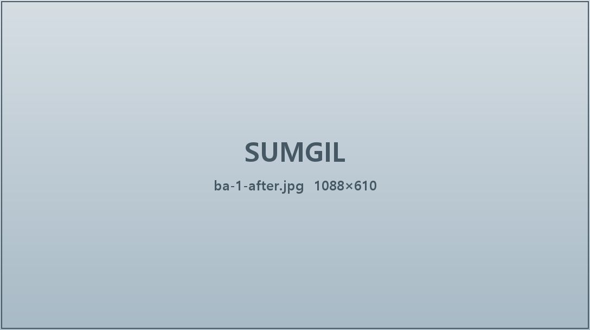
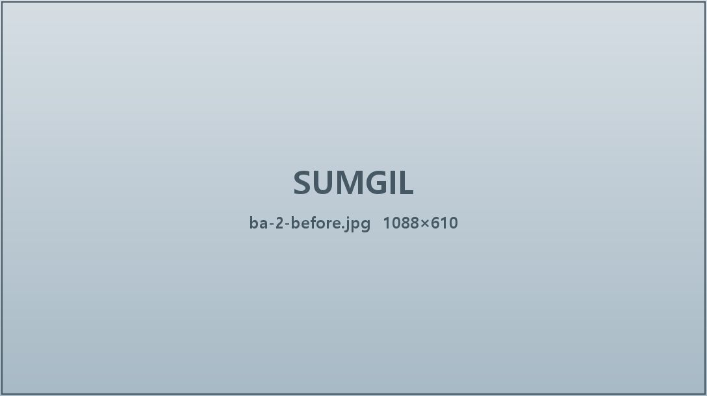
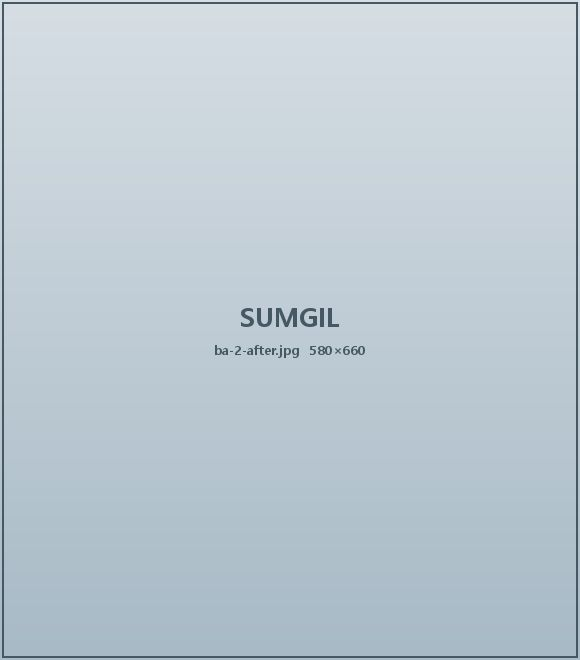
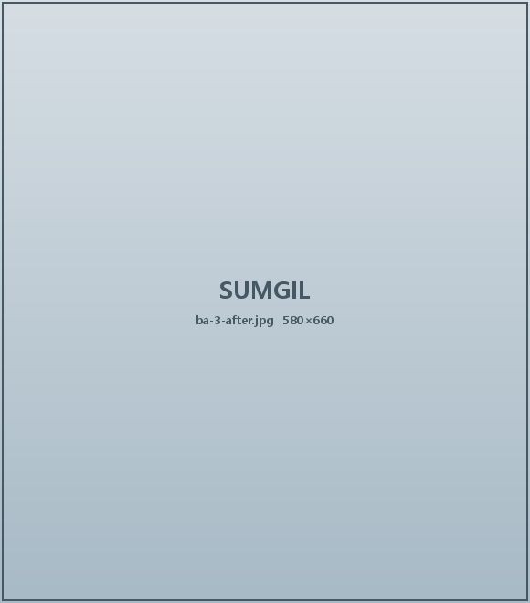
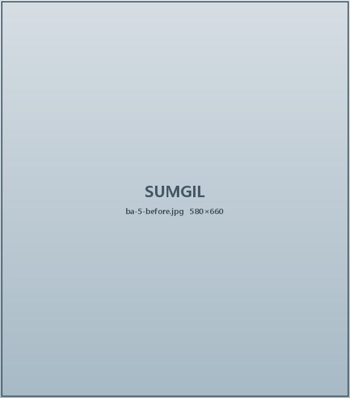
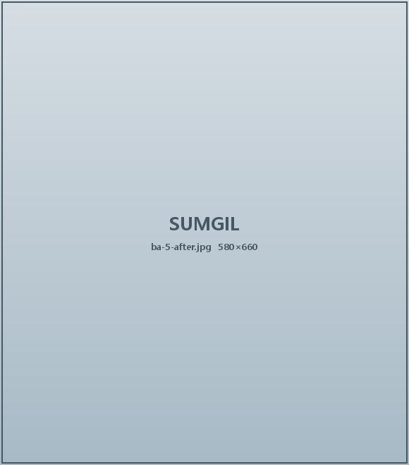
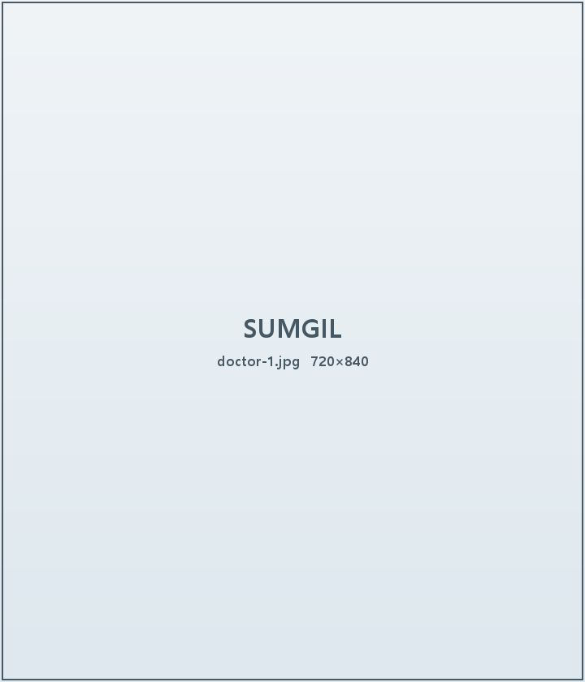
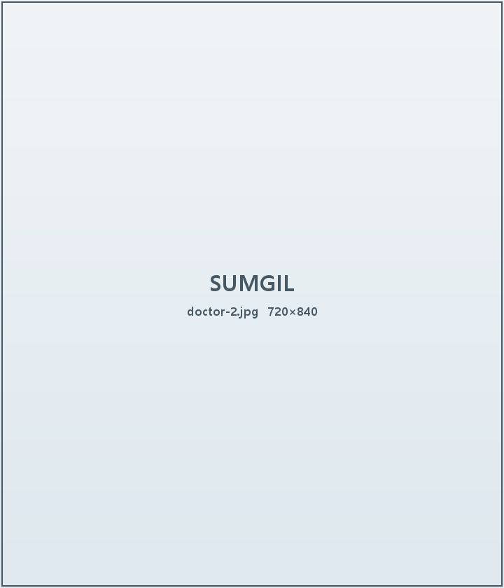
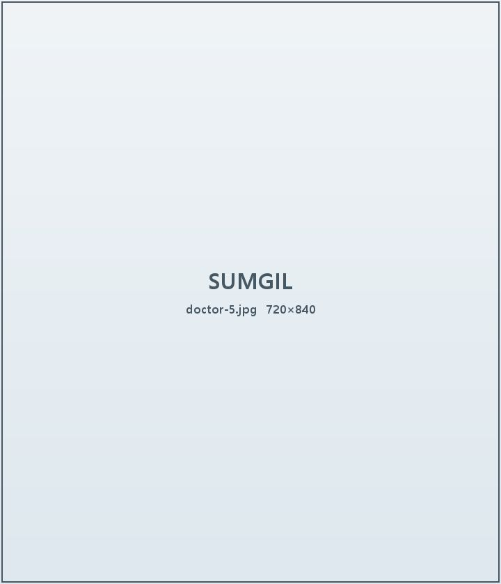
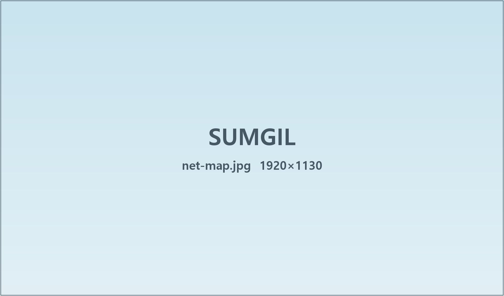

숨길이비인후과 — 코 하나만 보는 이비인후과 네트워크
코 하나만 집중고민연구이해수술집중해온 시간
코 하나만 보는 디테일의 차이, 숨길이비인후과
내 코 건강, 괜찮을까?
1분이면 끝나는 자가진단으로 먼저 확인해 보세요
코수술 17만례, 숨길의 기준
17년 동안 코 하나만 쌓아 온 기록입니다
숨 쉬는 기능부터 살립니다
보기 좋은 코보다 오래 편한 코를 먼저 생각합니다
코 전문의가 직접 설명합니다
진료부터 수술, 회복까지 같은 의료진이 함께합니다
SINCE 2009
20 26
숨길이비인후과는 코 하나에 17년 동안 집중해왔습니다.
코는 숨 쉬는 기능과 얼굴 인상을 좌우하는 중요한 부위이기에
더 깊이 이해하고 더 오래 고민해야 한다고 믿습니다.
숨길이비인후과는
오직 코 하나만 보기에,
기준이 다릅니다.
진료 분야
질환부터 성형까지,
코 중점 의료기관
코질환 수술
코막힘의 원인부터 치료 이후 관리까지 환자에게 맞는 진료 방향을 함께 고민합니다.
기능 코성형
기능 회복과 아름다움의 조화를 함께 고민한 코성형입니다.
수면무호흡
더 편안한 잠과 숨을 위한 검사와 치료 방법을 안내합니다.
숨길이비인후과 TV
쉽고 재밌게 알아보는 코 건강 이야기
달라진 모습, 분명해진 숨
BEFORE & AFTER

수술 후 3개월비중격만곡증 + 기능 코성형 · 20대 남성

Before
수술 후 3개월휜코 교정 · 30대 여성

수술 후 3개월매부리코 + 비밸브재건 · 20대 여성
코 재수술 · 30대 남성

Before
수술 후 3개월무보형 코성형 · 20대 여성
수술후기
숨길을 경험한
환자분들의 진솔한 후기
의료진 소개
17만례가 증명하는 실력,
코 전문의 숨길 팀

송도점
김규진 대표원장
비염으로 불편했던 시간을 알기에 더 깊이 공감합니다.
자연스러운 변화와 편안한 진료를 함께 고민합니다.

강남점
윤석영 대표원장
결과만은 연구와 코 진료의 기준을 다듬어갑니다.
구조와 기능, 형태의 균형까지 깊이 있게 살핍니다.
강남점
신일호 대표원장
귀에 쏙쏙 들어오는 설명으로 신뢰를 전합니다.
꾸준한 연구와 진정성 있는 진료로 더 나은 방향을 고민합니다.
서초점
오윤석 대표원장
코의 소중함을 알기에 더 신중하게 접근합니다.
환자와의 공감과 세심한 상담을 우선합니다.

종로점
문해린 원장
작은 변화가 삶의 질을 바꾼다고 믿습니다.
수술 이후의 회복까지 끝까지 함께합니다.

숨길이비인후과 네트워크
수도권 6개 지점에서
같은 기준으로 진료합니다
숨길이비인후과 강남점
- 주소
- 서울 강남구 강남대로 452, 6층
- 전화
- 02-539-7528
- 오시는 길
- 강남역 11번 출구 도보 2분
- 진료시간
- 평일 10:00~19:00 · 토 10:00~15:00
숨길이비인후과 서초점
- 주소
- 서울 서초구 서초대로 77길 54, 3층
- 전화
- 02-521-7528
- 오시는 길
- 교대역 8번 출구 도보 3분
- 진료시간
- 평일 10:00~19:00 · 토 10:00~15:00
숨길이비인후과 노원점
- 주소
- 서울 노원구 동일로 1414, 5층
- 전화
- 02-931-7528
- 오시는 길
- 노원역 9번 출구 도보 1분
- 진료시간
- 평일 10:00~19:00 · 토 10:00~15:00
숨길이비인후과 종로점
- 주소
- 서울 종로구 종로 51, 4층
- 전화
- 02-733-7528
- 오시는 길
- 종각역 4번 출구 도보 2분
- 진료시간
- 평일 10:00~19:00 · 토 10:00~15:00
숨길이비인후과 일산점
- 주소
- 경기 고양시 일산동구 중앙로 1275, 7층
- 전화
- 031-901-7528
- 오시는 길
- 정발산역 3번 출구 도보 5분
- 진료시간
- 평일 10:00~19:00 · 토 10:00~15:00